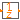

| Name | Description |
|---|---|
|  UnitDelay | Delays the clocked input signal for one sample period |
| FractionalDelay | Delays the clocked input signal for a fractional multiple of the sample period |
This block describes a unit delay:
// Time domain description
y(ti) = previous(u(ti))
// Discrete transfer function
1
y(z) = --- * u(z)
z
that is, the output signal y is the input signal u at the previous clock tick. At the first clock tick, the output y is set to parameter y_start.
Extends from Modelica_Synchronous.IntegerSignals.Interfaces.PartialClockedSISO (Block with clocked single input and clocked single output Integer signals).
| Name | Description |
|---|---|
| y_start | Value of output signal at first clock tick |
| Name | Description |
|---|---|
| y | Connector of clocked, Real output signal |
| Name | Description |
|---|---|
| shift | Delay = interval() * shift/resolution |
| resolution | Time quantization resolution of sample interval |
| Name | Description |
|---|---|
| u | Connector of clocked, Real input signal |
| y | Connector of clocked, Real output signal |